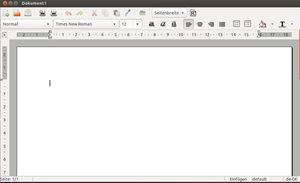

GNOME Office
Archivierte Anleitung
Dieser Artikel wurde archiviert, da er - oder Teile daraus - nur noch unter einer älteren Ubuntu-Version nutzbar ist. Diese Anleitung wird vom Wiki-Team weder auf Richtigkeit überprüft noch anderweitig gepflegt. Zusätzlich wurde der Artikel für weitere Änderungen gesperrt.
Zum Verständnis dieses Artikels sind folgende Seiten hilfreich:
Im Gegensatz zu Calligra/KOffice und LibreOffice/OpenOffice.org handelt es sich bei den Office-Komponenten des GNOME-Desktops um Einzelprogramme, die wenig miteinander zu tun haben. Es gibt weder ein durchgängiges Konzept für die Bedienung noch ein einheitliches Dateiformat. Zu GNOME Office gehören Einzelanwendungen, die sich in jeder Desktopumgebung nutzen lassen. Einzelne Komponenten von GNOME Office befinden sich noch in einem frühen Entwicklungsstadium.
Die Programme Dia und GnuCash werden bei der Installation von GNOME Office von der Paketverwaltung vorgeschlagen, jedoch nicht automatisch mit installiert. Evince und Glom sind ebenfalls in den Paketquellen vorhanden, aber ebenfalls keine Abhängigkeit des Metapaketes. Ease wird hier nur der Vollständigkeit halber erwähnt, ist aber wegen des sehr frühen Entwicklungsstands noch nicht in den Paketquellen enthalten.
|  |
| Abiword |
Folgende Komponenten gehören zu GNOME Office:
Abiword (Textverarbeitung)
Dia (Diagrammeditor)
Ease
 (Präsentationsprogramm, derzeit noch in Entwicklung)
(Präsentationsprogramm, derzeit noch in Entwicklung)Evince (Dokumentenbetrachter)
Evolution (Groupware)
Glom
(Datenbankdesigner für PostgreSQL, ähnlich wie Filemaker)GnuCash (Finanzverwaltung)
Gnumeric (Tabellenkalkulation)
GIMP (Bildbearbeitungsprogramm)
Inkscape (Vektorgrafikprogramm)
Planner (Projektverwaltung)
Simple Scan, in früheren Versionen XSane (Scanprogramm)
Nähere Beschreibungen zu den einzelnen Komponenten findet man in den separaten Wiki-Beiträgen.
Installation¶
Um die zentralen Programme der GNOME Office-Suite zu installieren [1], sind folgende Pakete notwendig. Evolution und Evince werden hier nicht installiert, da Evolution unter Ubuntu durch Thunderbird als Standard abgelöst wurde und Evince meist vorinstalliert ist:
abiword (universe)
gimp
gnumeric (universe)
inkscape
simple-scan
 mit apturl
mit apturl
Paketliste zum Kopieren:
sudo apt-get install abiword gimp gnumeric inkscape simple-scan
sudo aptitude install abiword gimp gnumeric inkscape simple-scan
Optional sind folgende Pakete:
dia-gnome (optional)
gnucash (universe, optional)
glom (universe, optional)
planner (universe, optional)
mit apturl
Paketliste zum Kopieren:
sudo apt-get install dia-gnome gnucash glom planner
sudo aptitude install dia-gnome gnucash glom planner
- Erstellt mit Inyoka
-
 2004 – 2017 ubuntuusers.de • Einige Rechte vorbehalten
2004 – 2017 ubuntuusers.de • Einige Rechte vorbehalten
Lizenz • Kontakt • Datenschutz • Impressum • Serverstatus -
Serverhousing gespendet von